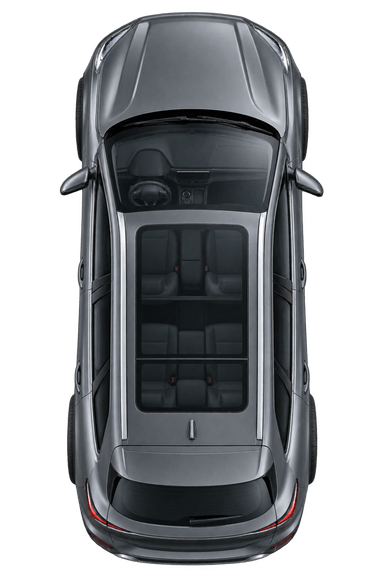

{{ tw.temperature }}{{ tw.temperatureUnit }}
{{ bootCenterLabel }}
ARRASTE PARA GIRAR · ROLE PARA APROXIMAR · BOTÃO DIREITO PARA DESLOCAR
{{ perfToastTitle }}
{{ perfToastMsg }}
Seu veículo{{ wg.profileTheme }}
{{ wg.profilePaintName }}
{{ wg.profileTrim }} · {{ wg.profileScene }}
Personalizar
Navegação
{{ wg.navigationDistance }}{{ wg.navigationStreet }}
{{ wg.navigationRemaining }}restante
{{ wg.navigationDuration }}duração
{{ wg.navigationEta }}chegada
{{ wg.navigationIdlePrimary }}{{ wg.navigationIdleCity }} {{ wg.navigationIdleActionHint }}
Mídia
{{ wg.mediaNoticeTitle }}{{ wg.mediaNoticeText }}
{{ wg.mediaTitle }}
{{ wg.mediaArtist }}
{{ wg.mediaTimeCur }}{{ wg.mediaTimeDur }}
Pneus{{ wg.tiresSourceText }}

{{ tw.pt }}{{ tw.pressure }}{{ tw.unitText }}
{{ wg.tiresSummaryText }}
Condução{{ wg.drivingSourceText }}
{{ dr.label }}
{{ gp.title }}
{{ gp.modeText }}
{{ gp.value }}
{{ gp.unit }}
Clima{{ wg.climateOutside }} {{ wg.climateSrcText }}
{{ wg.climateNote }}
Energia{{ wg.consumptionSourceText }}
Agora
{{ wg.consumptionNowFuel }}{{ wg.consumptionNowFuelUnit }}
{{ wg.consumptionNowFuelNote }}
{{ wg.consumptionNowEv }}{{ wg.consumptionNowEvUnit }}{{ wg.consumptionNowKw }}
{{ wg.consumptionTripLabel }}
{{ wg.consumptionTripFuel }}{{ wg.consumptionTripFuelUnit }}
- Distância{{ wg.consumptionTripKm }}
- Tempo{{ wg.consumptionTripTime }}
- Elétrico{{ wg.consumptionTripEvShare }}
{{ wg.consumptionBarsLabel }}
EnergiaDemonstração
Finalizar viagem?
A viagem atual é salva agora. Se o carro continuar ligado, uma nova viagem começa em seguida.
Combustível
Elétrico
Instantâneo
Combustível
{{ wg.consumptionNowFuel }}{{ wg.consumptionNowFuelUnit }}
{{ wg.consumptionNowFuelChip }}
Bateria
{{ wg.consumptionNowKwValue }}kW
{{ wg.consumptionNowKwChip }}
Últimos 10 minkW traçãokW regen.L/100 km
{{ wg.consumptionTenMinAvg }}{{ wg.consumptionTripLabel }}{{ wg.consumptionTripSince }}
- Distância{{ wg.consumptionTripKm }}
- Elétrico{{ wg.consumptionTripEvShare }}
- Consumo{{ wg.consumptionTripEconomy }}
- Combustível{{ wg.consumptionTripFuelL }}
- Bateria{{ wg.consumptionTripKwh }}
- Recuperado{{ wg.consumptionTripKwhIn }}
Níveis{{ wg.consumptionLevelsSpec }}
{{ wg.consumptionSocText }}{{ wg.consumptionSocSub }}
{{ wg.consumptionSocDelta }}
{{ wg.consumptionFuelText }}{{ wg.consumptionFuelSub }}
{{ wg.consumptionFuelDelta }}
{{ wg.consumptionDetailStopTitle }}{{ wg.consumptionDetailStopDetail }}
{{ wg.consumptionDetailNote }}
{{ wg.consumptionHistorySummary }}elétricocombustão
{{ hb.label }}
{{ wg.powerState }}{{ wg.powerSourceText }}
Potência da bateria{{ wg.powerKw }}kW
SOC{{ wg.powerSocNum }}%
Tensão{{ wg.powerVoltage }}V
Corrente{{ wg.powerCurrent }}A
Eixo dianteiro{{ wg.powerFrontLabel }}
Eixo traseiro{{ wg.powerRearLabel }}
ESQUERDA
DIREITA
PAPEL DE PAREDE
{{ wallpaperSourceSub }}
{{ wallpaperStripLabel }}
{{ wallpaperCredit }}
CLIMA{{ focusedClimateCurrent }}
{{ focusedClimateHelper }}
Finalizar viagem?
A viagem atual é salva agora. Se o carro continuar ligado, uma nova viagem começa em seguida.
COMBUSTÍVEL
ELÉTRICO
INSTANTÂNEO
COMBUSTÍVEL
{{ focusedConsumptionNowFuel }}{{ focusedConsumptionNowFuelUnit }}
{{ focusedConsumptionNowFuelChip }}
BATERIA
{{ focusedConsumptionNowKwValue }}kW
{{ focusedConsumptionNowKwChip }}
ÚLTIMOS 10 MINkW traçãokW regen.L/100 km
{{ focusedConsumptionTenMinAvg }}{{ focusedConsumptionTripLabel }}{{ focusedConsumptionTripSince }}
- DISTÂNCIA{{ focusedConsumptionTripKm }}
- ELÉTRICO{{ focusedConsumptionTripEvShare }}
- CONSUMO{{ focusedConsumptionTripEconomy }}
- COMBUSTÍVEL{{ focusedConsumptionTripFuelL }}
- BATERIA{{ focusedConsumptionTripKwh }}
- RECUPERADO{{ focusedConsumptionTripKwhIn }}
NÍVEIS{{ focusedConsumptionLevelsSpec }}
{{ focusedConsumptionSocText }}{{ focusedConsumptionSocSub }}
{{ focusedConsumptionSocDelta }}
{{ focusedConsumptionFuelText }}{{ focusedConsumptionFuelSub }}
{{ focusedConsumptionFuelDelta }}
{{ focusedConsumptionDetailStopTitle }}{{ focusedConsumptionDetailStopDetail }}
{{ focusedConsumptionDetailNote }}
{{ focusedConsumptionHistorySummary }}elétricocombustão
{{ hb.label }}
{{ focusedRangeTotalLabel }}{{ focusedRangeTotal }}{{ focusedRangeUnit }}
CARGA DA BATERIA{{ focusedRangeSoc }}
EVCOMBUSTÍVEL
ESTIMATIVA EV{{ focusedRangeEv }}{{ focusedRangeUnit }}
ESTIMATIVA COMBUSTÍVEL{{ focusedRangeFuel }}{{ focusedRangeUnit }}
{{ focusedRangeSource }}
{{ focusedPowerState }}{{ focusedPowerSource }}
Potência da bateria{{ focusedPowerKw }}kW
SOC{{ focusedPowerSocNum }}%
Motor{{ focusedPowerEngineLabel }}
Eixo dianteiro{{ focusedPowerFrontLabel }}
Eixo traseiro{{ focusedPowerRearLabel }}
Carga da bateria · últimos 60 sPico {{ focusedPowerHistoryPeak }} kW
{{ focusedPowerHistoryCeiling }} kW
0 · −60 sAgora
{{ focusedPowerHistoryLabel }}
Magnitude · não é potência nas rodas
Leituras elétricas
Tensão {{ focusedPowerVoltage }} VCurrent {{ focusedPowerCurrent }} A
Fluxo informado · a atividade dos eixos pode ser estimada
{{ dg.label }}
{{ focusedDrivingAssistLabel }}
{{ focusedDrivingNote }}
{{ focusedMediaTitle }}
{{ focusedMediaArtist }}
{{ focusedMediaAlbum }}
{{ focusedMediaTimeCur }}{{ focusedMediaTimeDur }}
{{ focusedMediaNote }}

{{ desksHint }}
Relógio
EDITAR GRÁFICOS
DISPOSIÇÃO
PANE {{ pe.label }}
Y1
Y2
ESTILO
ESTILO
{{ pageStubTitle }}
Em breve
{{ cfgTitle }}
{{ assignBanner }}
NÃO FOI POSSÍVEL CARREGAR O MODELO
{{ errorMsg }}